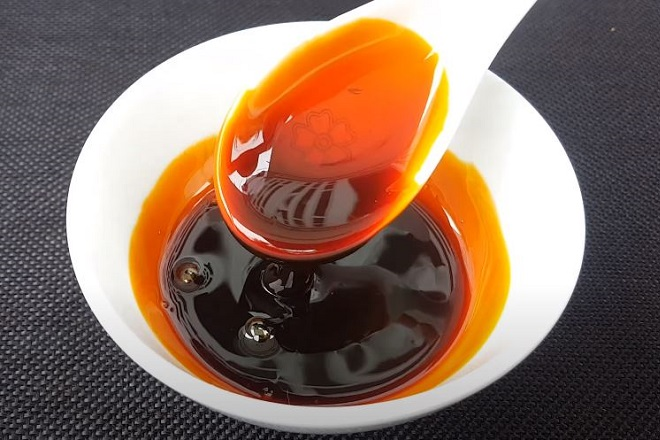

Vietnamese Caramel Sauce

Description
Vietnamese caramel sauce that you an use in many vietnamese dishes like braised pork, and claypot catfish among others. Make sure you are paying attention to the caramel as it starts turning color because it can burn very quickly.
But don't worry, you got this.
This recipe yields roughly 2 cups. You'll only need about 1 cup for my Braised Pork recipe, but if sealed and in the fridge, this should not go bad and you can use it in the future.
Ingredients
- 1/2 cup water, plus another cup for later
- 1/2 tsp unseasoned rice, apple, or white vinegar
- 2 cups sugar
Steps
- In a saucepan, combine 1/2 cup water, vinegar, and the sugar.
- Stir so all the sugar gets wet and put over medium/high heat. It'll take a good 5 or so minutes to start browning.
- The caramel will start to lighly brown, continue to swirl it around until it starts to get golden brown.
- Once golden brown, take the pan off the heat and give it a minute to start turning dark red and place into your sink.
- Slowly and carefully add the remaining cup of water. The pot will start to bubble vigorously at first.
- Return the pot to the stove and mix with a spoon to get all the crystalized sugar to melt then remove from heat.
- Let the sauce cool down a bit before storing it into a deli container or what have you.
Jump to home